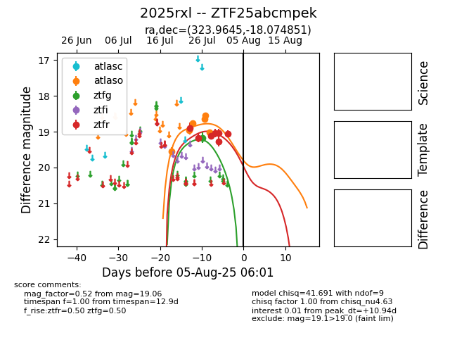

Target 2025rxl at 2025-08-05 06:01, see:
FINK: fink-portal.org/2025rxl
Lasair: lasair-ztf.lsst.ac.uk/objects/2025rxl
ALeRCE: alerce.online/object/2025rxl
TNS: wis-tns.org/object/2025rxl
YSE: ziggy.ucolick.org/yse/transient_detail/2025rxl
alt names
ZTF25abcmpek (ztf,fink)
2025rxl (tns,yse)
coordinates:
equatorial (ra, dec) = (323.9645,-18.07485)
galactic (l, b) = (33.6407,-44.24388)
photometry
last atlaso=19.03, ztfg=19.17, ztfr=19.06
6 atlaso, 1 ztfg, 7 ztfr detections
